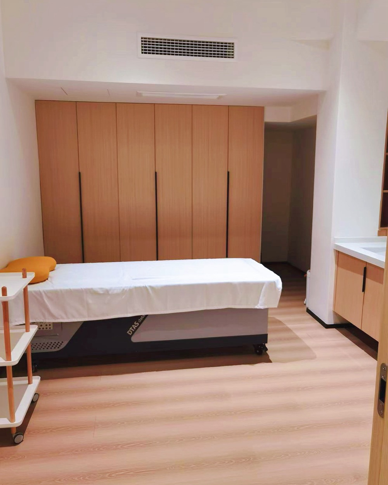

TCM Wellness Report
A detailed intake covering sleep, digestion, energy, whether you run cold or hot, what you have already tried, plus tongue and face photographs, read by a senior physician at Baoputang Clinic, our licensed partner clinic in Ningbo, China. You receive a written report of what they see, how your body has been running in the way Traditional Chinese Medicine (TCM) reads it, and the everyday changes that shift it: sleep timing, keeping warm, how and what to eat, movement. Practical, and yours to act on straight away.

Observation Reading
A deeper reading by one independent practitioner, working from observation and a full history to trace where things began. It sets out what she sees, where she thinks it has come from, what to be careful of, and what she would change first, and, if sessions in person would add anything, honestly how much. It is complete when the report reaches you, and whether to go on to sessions in China is your decision, made after you have read it. She works independently, separate from Baoputang Clinic.

Being seen in person, in China
The same practitioner also sees clients in person at her own practice in China. She sees one client at a time, and each session is an hour. This is never sold in advance and never as a package: how many sessions would be worth making, and what they would cost, are written into your Observation Reading before you commit to anything. We arrange the practitioner's time and an interpreter; flights and accommodation you book yourself, in your own name.